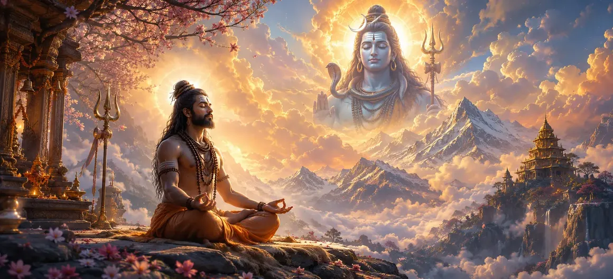

The Goal of Yoga
The seventy-second chapter of the Vayaviya Samhita reveals the sublime destination of meditative practice, detailing how true yoga culminates in the complete dissolution of ego and direct union with Lord Shiva.
Rishi Vayu explains that the ultimate objective of yoga transcends physical postures, anchoring the soul in eternal bliss and supreme consciousness.
This chapter serves as a profound guide for seekers striving for spiritual liberation.
Chapter 72 Highlights
Essence of Yoga
Moving beyond physical practice to inner realization.
Mind Mastery
Quieting the turbulent waves of thought.
Divine Absorption
Merging individual consciousness with Supreme Shiva.
Eternal Bliss
Experiencing supreme peace and liberation (Moksha).
Inner Illumination
Awakening the light of wisdom within the heart.
Path Ahead
Transitioning to Chapter 73 (Obstacles on the Path of Yoga).
Core Topics in This Chapter
- 01Definition and Nature of the Supreme Goal of Yoga→
- 02The Dissolution of Ego in Meditative Absorption→
- 03Direct Realization of Lord Shiva Within→
- 04The State of Samadhi and Supreme Bliss→
- 05Jivanmukti: Liberation While Living→
- 06Spiritual Fruits of Achieving Yoga’s End→
- 07Transition to Chapter 73 (Obstacles on the Path of Yoga)→
Definition and Nature of the Supreme Goal of Yoga
Rishi Vayu explains that yoga is not merely a physical discipline, but the complete union of the individual soul (Jiva) with the Supreme Soul (Paramatman, Lord Shiva).
The supreme goal is the eradication of duality and the realization of non-dual consciousness.
The Dissolution of Ego in Meditative Absorption
As the mind becomes deeply concentrated through meditation, the sense of 'I' and 'mine' dissolves, clearing away the mental clutter that separates the devotee from Mahadeva.
Ego surrender paves the way for divine illumination.
Direct Realization of Lord Shiva Within
The true yogi perceives Lord Shiva not as an external entity residing in distant heavens, but as the innermost light shining brightly within the lotus of the heart.
Internal perception reveals the omnipresence of the Lord.
The State of Samadhi and Supreme Bliss
Reaching Samadhi, the yogi experiences an ocean of unadulterated bliss, transcending hunger, thirst, sorrow, and the cycle of birth and death.
This is the pinnacle of spiritual achievement.
Jivanmukti: Liberation While Living
The text notes that one who attains this ultimate state becomes a Jivanmukta—liberated while still inhabiting a physical body, untouched by worldly attachments and illusions.
Freedom is realized right here in this very life.
Spiritual Fruits of Achieving Yoga’s End
Rishi Vayu concludes that such a realized soul merges eternally into the supreme effulgence of Lord Shiva, attaining absolute peace and immortality.
All bonds of karma are severed permanently.
Transition to Chapter 73 (Obstacles on the Path of Yoga)
Having detailed the supreme goal of yoga in Chapter 72, Rishi Vayu prepares to narrate Chapter 73, 'Obstacles on the Path of Yoga'.
This next chapter will warn seekers about the various pitfalls and distractions that test spiritual practitioners.
Key Teachings of Chapter 72
True Union
Merging Jiva with Paramatman.
Ego Loss
Dissolving 'I' and 'mine' in meditation.
Inner Vision
Perceiving Shiva within the heart.
Samadhi State
Experiencing supreme unalloyed bliss.
Jivanmukti
Liberation while still in the body.
Obstacles Prelude
Preparing for Chapter 73 warnings.
Spiritual Reflection
The ultimate destination of yoga is not a distant realm, but the realization of our own divine identity in union with Lord Shiva. When the ripples of ego subside, the pure mirror of the mind reflects absolute reality.
Living the Message of Chapter 72
Dedicate daily time to silent meditation and turning the senses inward.
Practice letting go of petty ego struggles and emotional turbulence.
Cultivate the awareness of Lord Shiva's presence within your own heart.
Key Spiritual Concepts
The ultimate culmination and supreme goal of all yogic practices.
The complete dissolution of individual ego and sense of separateness.
The direct inner vision of Lord Shiva residing within the heart lotus.
The highest state of meditative absorption devoid of all mental modifications.
The state of spiritual liberation attained while still living in a physical body.
The ultimate non-dual union of the individual soul with the Supreme Lord.
Chapter Summary
Vayaviya Samhita Chapter 72 explores the ultimate goal of yoga—meditative absorption, ego dissolution, and direct union with Lord Shiva—setting the stage for Chapter 73, 'Obstacles on the Path of Yoga'.
Frequently Asked Questions
1. What is the primary focus of Vayaviya Samhita Chapter 72?
Chapter 72 explores the ultimate goal of yoga, detailing meditative absorption, self-realization, and complete union with Lord Shiva.
2. How is the supreme goal of yoga described in this chapter?
The supreme goal is described as the dissolution of individual ego into universal consciousness, experiencing eternal bliss in the presence of Mahadeva.
3. Who explains these profound yoga teachings?
Rishi Vayu expounds these sublime insights on yoga and liberation to the attentive sages.
4. What is the next chapter for navigation after Chapter 72?
The next chapter for navigation is titled 'Obstacles on the Path of Yoga'.
“When the seeker's mind melts into Lord Shiva like salt in water, the goal of yoga is fulfilled, revealing the boundless ocean of eternal peace.”
Continue Through Vayaviya Samhita
Chapter 72 concludes The Goal of Yoga. Continue to Obstacles on the Path of Yoga.